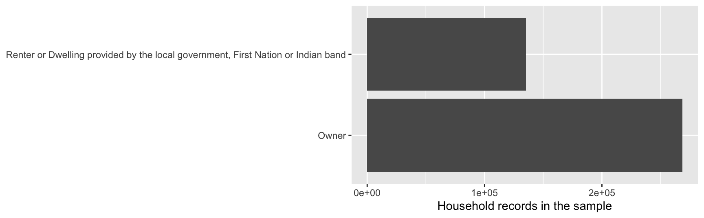
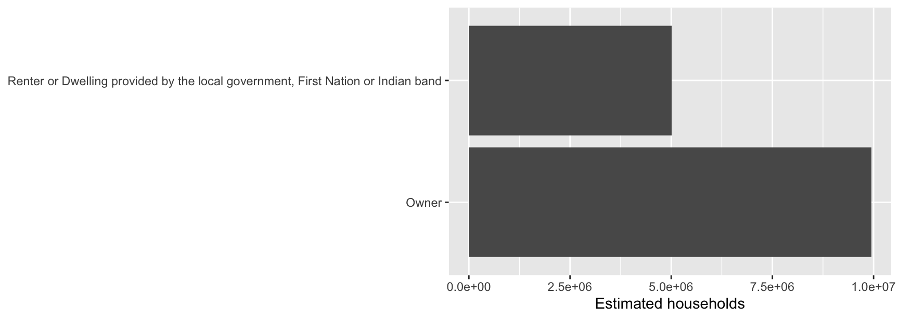
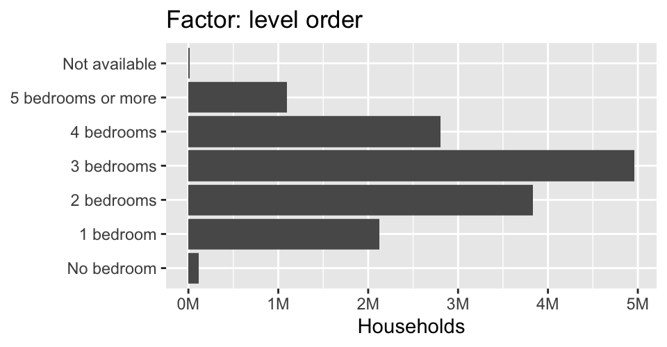
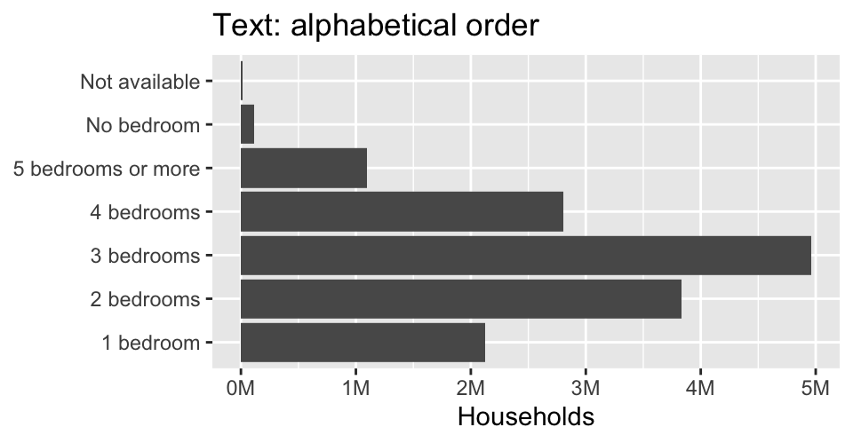
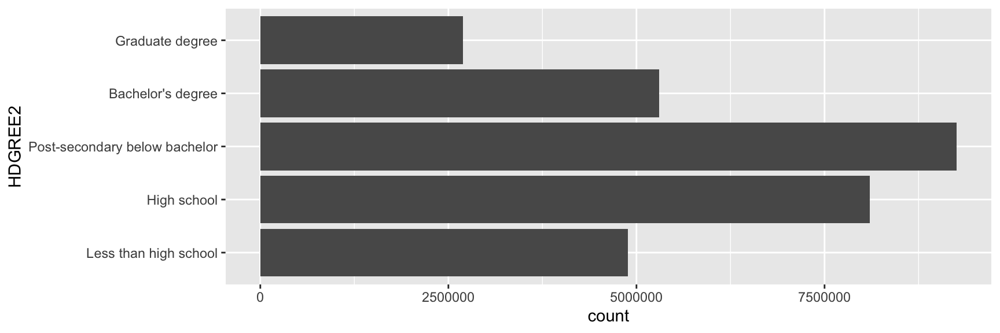

library(tidyverse)
pumf <- read_rds("data/2021_census_pumf_ind.rds")
dim(pumf)[1] 980868 144COMM 407 · Weights, the user guide, codes, and factors
31 October 2026
WEIGHT is how many people each row represents, about 37.Try it: run View(pumf) in the Console. Find AGEGRP and CFInc. Are their values numbers or words?
The rows are a sample. sum(WEIGHT) estimates the population: about 36.3 million people in private households.
Count people with sum(WEIGHT) or count(x, wt = WEIGHT). Average with weighted.mean(x, WEIGHT), which counts each row WEIGHT times.
Each household has one primary maintainer. Keep that person to estimate household counts.


The weighted chart estimates households. Without weights, it counts sampled records, about 37 times fewer.
The PUMF user guide is the PDF in your data folder: 2021 Census Individuals PUMF User Guide_v2.pdf.
Try it: find CFInc in Chapter 2. Whose income is it?
Read a column’s description before you use it. The name alone can mislead you.
Chapter 2 on TotInc:
The value 88,888,888 stands for not available. The value 99,999,999 stands for not applicable and is applied to all persons aged less than 15 years.
Check Chapter 2 for codes like these before you average a column.
A coding agent can read the guide in your data folder. Name the PDF and the column:
Before you use CFInc, read its entry in Chapter 2 of
data/2021 Census Individuals PUMF User Guide_v2.pdf.
Tell me whose income it measures and which values are codes.
Give the page number and quote the description.The guide improves the AI’s code. Check the quoted page yourself.
Using the 2021 PUMF:
pumf |>
group_by(CMA) |>
summarise(population = sum(WEIGHT)) |>
filter(!str_detect(CMA, "^Other")) |>
arrange(desc(population)) |>
head(6)# A tibble: 6 × 2
CMA population
<fct> <dbl>
1 Toronto 6130098.
2 Montréal 4210000.
3 Vancouver 2608986.
4 Ottawa - Gatineau 1478890.
5 Calgary 1467038.
6 Edmonton 1396903.Estimate the average total income (TotInc) in each CMA and show the ten highest.
TotInc uses 88888888 and 99999999 for missing values. Remove them first.weighted.mean().pumf |>
filter(!TotInc %in% c(88888888, 99999999), !str_detect(CMA, "^Other")) |>
group_by(CMA) |>
summarise(avg_income = weighted.mean(TotInc, w = WEIGHT)) |>
arrange(desc(avg_income)) |>
head(10)# A tibble: 10 × 2
CMA avg_income
<fct> <dbl>
1 Calgary 64075.
2 Ottawa - Gatineau 61892.
3 Edmonton 59982.
4 Toronto 59160.
5 Hamilton 57878.
6 Victoria 57618.
7 Regina – Saskatoon 57250.
8 Oshawa 56513.
9 Vancouver 56229.
10 Greater Sudbury – Thunder Bay 54353.Imagine two homes where the owners live:
| Home | People | Dwelling value |
|---|---|---|
| A | 1 | $500,000 |
| B | 3 | $1,500,000 |
What is the average dwelling value? What if you average one record per person?
Including every person gives larger households more weight.
Plot each CMA’s population (x) against its average dwelling value (y).
WEIGHT over all person records, including renters.Tenur == "Owner"), turn the Value codes 88888888 and 99999999 into NA, then use weighted.mean().CMA and plot them.The dwelling average covers homes where owners live, excluding farms. The population includes everyone in private households.
population_by_cma <- pumf |>
filter(!str_detect(CMA, "^Other")) |>
group_by(CMA) |>
summarise(population = sum(WEIGHT))
value_by_cma <- pumf |>
filter(PRIHM == "Person is primary maintainer", Tenur == "Owner") |>
filter(!str_detect(CMA, "^Other")) |>
mutate(Value = if_else(Value %in% c(88888888, 99999999), NA, Value)) |>
group_by(CMA) |>
summarise(avg_value = weighted.mean(Value, WEIGHT, na.rm = TRUE))Keep the summaries separate: filtering to primary maintainers before summing WEIGHT would count households instead of people.
As in deck 10’s weekday chart, a factor stores categories, and its levels set their order.


Why does “No bedroom” move after “5 bedrooms or more” on the right?
[1] 45 to 49 years 35 to 39 years 45 to 49 years
22 Levels: 0 to 4 years 5 to 6 years 7 to 9 years ... Not available[1] 13 11 13as.numeric() returns each level’s position, not an age. Averaging these numbers runs without an error and gives a meaningless result.
# A tibble: 3 × 2
Tenur n
<fct> <int>
1 Owner 699640
2 Renter or Dwelling provided by the local government, First Nation or I… 279505
3 Not available 1723[1] 0R does not treat “Not available” as missing, so it also shows up as a bar, as in the bedroom chart. Remove it yourself before computing shares.
[1] Renter Owner Owner
Levels: Owner RenterA typo in levels turns values into NA without a warning:
unit_size <- factor(c("small", "large", "medium"),
levels = c("small", "medium", "large"), ordered = TRUE)
unit_size[1] small large medium
Levels: small < medium < large[1] FALSE TRUE TRUE>= compares positions in the level order. as.ordered(pumf$HDGREE) makes education levels comparable the same way.
Create HDGREE2 with five levels, in this order:
“Less than high school”, “High school”, “Post-secondary below bachelor”, “Bachelor’s degree”, “Graduate degree”
case_when() on HDGREE; leave “Not available” and “Not applicable” as NA.HDGREE2 a factor with the levels in the order above.count(HDGREE2, wt = WEIGHT).NA group.edu <- pumf |>
mutate(
hdgree = as.ordered(HDGREE),
HDGREE2 = case_when(
hdgree == "No certificate, diploma or degree" ~ "Less than high school",
hdgree == "High (secondary) school diploma or equivalency certificate" ~ "High school",
hdgree <= "University certificate or diploma below bachelor level" ~ "Post-secondary below bachelor",
hdgree == "Bachelor's degree" ~ "Bachelor's degree",
hdgree <= "Earned doctorate" ~ "Graduate degree"
),
HDGREE2 = factor(HDGREE2, levels = c(
"Less than high school", "High school", "Post-secondary below bachelor",
"Bachelor's degree", "Graduate degree"))
)
edu |> count(HDGREE2, wt = WEIGHT)# A tibble: 6 × 2
HDGREE2 n
<fct> <dbl>
1 Less than high school 4884572.
2 High school 8098267.
3 Post-secondary below bachelor 9257054.
4 Bachelor's degree 5298700.
5 Graduate degree 2691905.
6 <NA> 6097978.
The bars follow the level order you chose. NA covers “Not available” and “Not applicable” (people under 15).
pumf16 <- read_rds("data/2016_census_pumf_ind.rds")
c(TOTINC = "TOTINC" %in% names(pumf16), TotInc = "TotInc" %in% names(pumf16))TOTINC TotInc
TRUE FALSE [1] "Moncton – Saint John" "Ottawa - Gatineau"
[3] "Kitchener – Cambridge – Waterloo" "Greater Sudbury – Thunder Bay"
[5] "Kelowna – Abbotsford-Mission" TOTINC became TotInc, and TENUR became Tenur.bind_rows() (deck 20), they become separate groups. Check every factor’s levels in both years.We asked an AI: “Compare the average total income of owners and renters in the Vancouver CMA, and show the population of each group.”
pumf |>
filter(CMA == "Vancouver") |>
group_by(Tenur) |>
summarise(avg_income = mean(TotInc), population = n())# A tibble: 3 × 3
Tenur avg_income population
<fct> <dbl> <int>
1 Owner 17276397. 47625
2 Renter or Dwelling provided by the local government, Fi… 16864576. 22760
3 Not available 1736559. 59pumf |>
# 1. Drop the "Not available" group
filter(CMA == "Vancouver", Tenur != "Not available") |>
# 2. Turn missing-value codes into NA
mutate(TotInc = if_else(TotInc %in% c(88888888, 99999999), NA, TotInc)) |>
group_by(Tenur) |>
# 3. Count people with WEIGHT, not records
summarise(avg_income = weighted.mean(TotInc, WEIGHT, na.rm = TRUE),
population = sum(WEIGHT))# A tibble: 2 × 3
Tenur avg_income population
<fct> <dbl> <dbl>
1 Owner 60589. 1763854.
2 Renter or Dwelling provided by the local government, Fi… 47193. 842946.Know
Write it without help
sum(WEIGHT), count(x, wt = WEIGHT)weighted.mean(x, WEIGHT)aes(weight = WEIGHT) in geom_bar()factor(x, levels = ...), levels()Recognize
Say what the line does
88888888, 99999999: missing-value codesif_else(), case_when(): recode valuesas.numeric() on a factor: level positions, not valuesas.character(): factor labels as textstr_detect(): match textLook up
When you meet it
map_chr()attr(x, "label")setdiff()as.ordered()Before summarising, check the unit (people or households), weights, and missing-value codes.
COMM 407